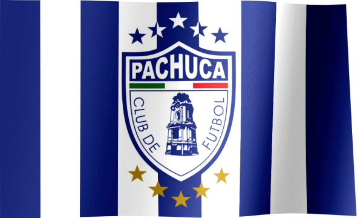

Datos básicos del Club Pachuca
- Fundación
- 1 de noviembre de 1892
- Sede
- Pachuca de Soto, Hidalgo, México
- Estadio
- Estadio Hidalgo
- Apodo
- Tuzos
El Club de Fútbol Pachuca es un club profesional de fútbol con sede en la ciudad de Pachuca, capital del Estado de Hidalgo, que actualmente participa en la Primera División de México, en la cual permanece desde 1998. Fundado el 1 de noviembre de 1892 con el nombre de Pachuca Football Club por trabajadores de la compañía minera Real del Monte y Pachuca, es el equipo más antiguo del fútbol mexicano. Disputa sus juegos de local en el Estadio Hidalgo desde 1993, y es el club con más escuelas de fútbol en México. Cuenta en su palmarés con 7 títulos nacionales y 9 internacionales, al ganar siete veces la Primera División de México, seis veces la Copa de Campeones de la Concacaf, una Copa Sudamericana en 2006, siendo el único club Mexicano y del mundo en ganar un torneo continental oficial fuera de la confederación a la que pertenece. También conquistó el Derbi de las Américas y la Copa Challenger dentro de la primera edición de la Copa Intercontinental de la FIFA en 2024, convirtiéndose en el primer club Mexicano y de Concacaf en ganar un título organizado directamente por la FIFA. A su vez, es el primer club mexicano en haber participado en cuatro ocasiones en la Copa Mundial de Clubes de la FIFA, firmando su mejor actuación en 2017 al obtener el tercer lugar e igualando la segunda mejor actuación de un equipo Mexicano y de la Concacaf en esta competición.
 "Puro Pinche Pachuca"
"Puro Pinche Pachuca"

El fútbol no solo se juega, se siente.